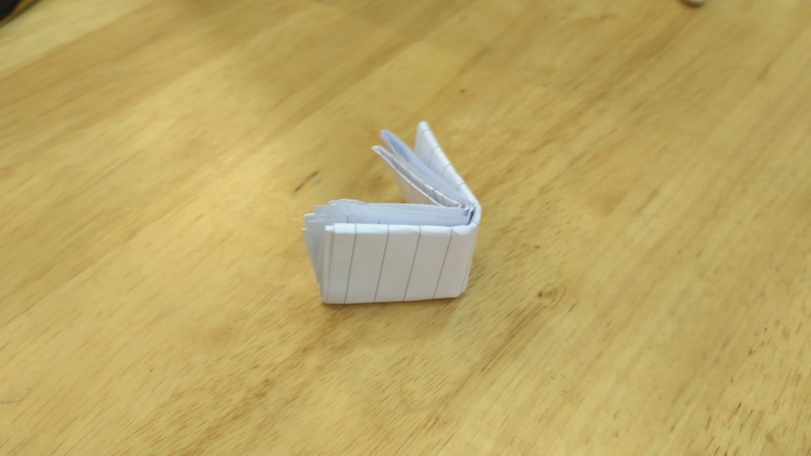
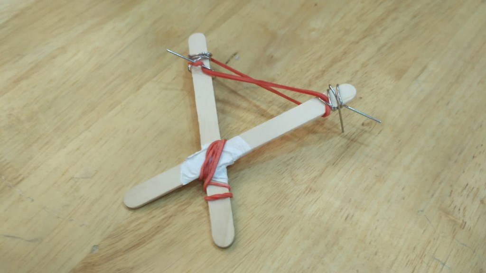
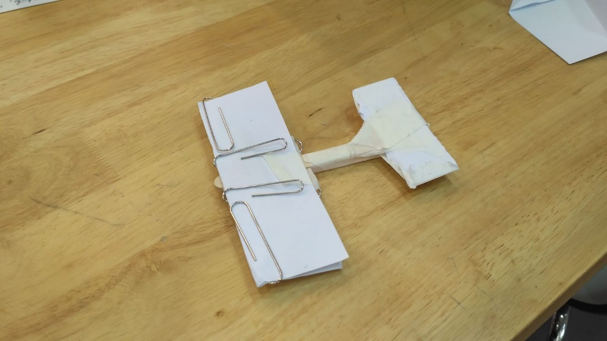
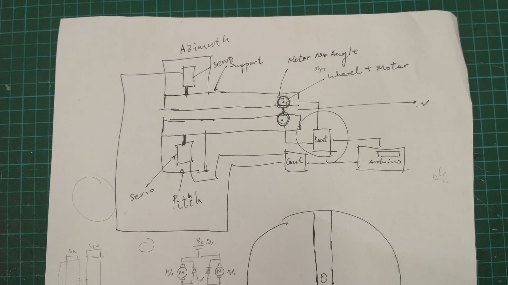
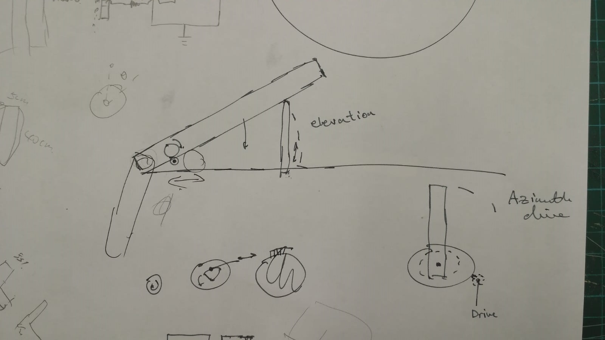
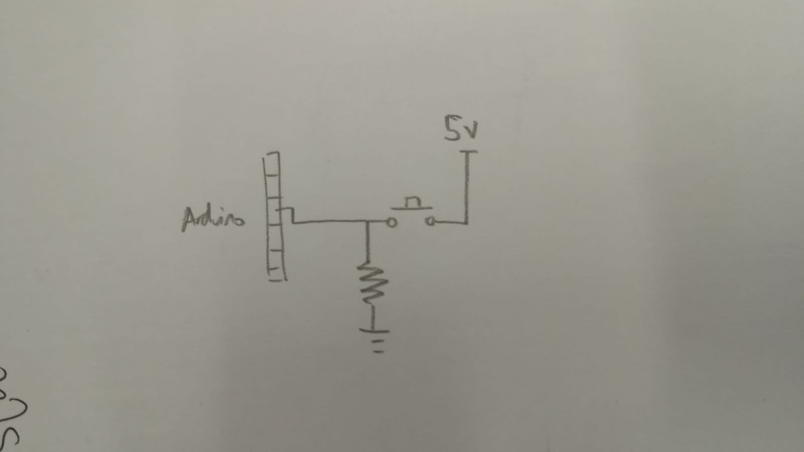
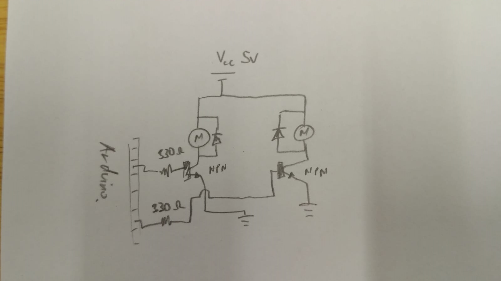

Flying Paperwork
Resources
THIS IS A PLACE HOLDER, DONT FORGET ME!!!!
Everything that could be found in EA Fablab
Mission Statement
Be able to send a A4 sized paper or smaller and sent it through air. Paper must arrive in a neat fashion. Must have accuracy and sometimes distance. Must all be automated
Phase 1
Design 1
Using a paper airplane to shoot the message through air
Shooting a bullet like object through the air to send the message
For this, we thought of the weapon of choice that we use to use during our secondary school time, a thickly folded paper propelled using rubber band normally used to cause our peers to be in deep pain and hatred towards us. However, we think this idea could be useful for tranferring the message through the air as it should have enough force to cut through the air(since it can harm human too)
 Design 3
Using a glider to carry the message through the air
This is our very first design on glider to see how it would fly, it is just a very simple design with no planning at all. We just want to try whether a glider shape using paper and popsicle stick could be used
After testing, it failed horribly but decided that with a better planning and design, the glider should be able to send our message through the air
Phase 2 - Launcher
Resources
2x DC Motor
2x Servo Motor
2x Push Button
1x Arduino Uno
Wires
Launcher Design
After coming up with some medium that we can use to hold our messages, we start coming up with design for our launcher
Since we need to have either accuracy or distance, we design our launcher to have its launching mechanism variable so we can vary the speed and we intent to have a dual-axis servo control so we could launch it anywhere we want.
 This will be the physical frame of the launcher
Launcher Electronics
With the design to achieve both distance and accuracy, we figured out that we will need 2 DC motor for the launching the projectile and 2 servo to control the 2-axis tilt of the launcher. The launcher must be automated so we will have 3 buttons each with its own instruction to shoot straight, left, and right.
Button
We will be using a pull-down resistor to make the button interface with the Arduino
Dual Motor Launcher
We will connect the motor using NPN Transistor to use as a switch and an amplifier so that we can use the output I/O in our Arduino to control the motor. We have also chosen to use the PWM to adjust the speed of the motor for better accuracy
Finally, we add the servo motor that will control the direction of our launch
We simulate it using Tinker CAD and it works!

With that all the electronic components are working